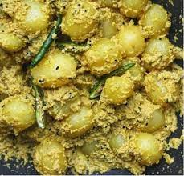

Posto

Description
Posto, also known as poppy seed curry, is a classic Bengali dish that highlights the versatility of poppy
seeds in Indian cuisine. Made primarily with poppy seeds, coconut, and a selection of vegetables, posto
offers a rich and creamy texture with a subtle nutty flavor.
Ingredients:-
- Vegetables (such as potatoes, carrots, peas, and cauliflower)
- Fresh poppy seeds
- Dried red chilies
- Mustard oil
- Turmeric powder
- Cumin seeds
- Ginger and garlic paste
- Onion
- Salt
- Sugar
- Fresh Coriander leaves for garnishing
Steps:-
- Soak fresh poppy seeds overnight and grind them into a fine paste along with dried red chilies.
- Heat mustard oil in a pan and temper it with turmeric powder, cumin seeds, bay leaf, cardamom
pods, cloves, and green chili.
- Finely chop the onions and sauté them in the heated oil until they turn translucent.
- Add ginger and garlic paste to the pan and fry until aromatic.
- Add the ground poppy seed paste to the pan and stir well. Cook on low heat until the oil separates from the mixture.
- Cut the chosen vegetables into small cubes and add them to the pan. Mix gently to coat the vegetables
with the poppy seed paste.
- Add salt and sugar to taste, followed by enough water to cover the vegetables. Bring the mixture to a boil,
then lower the heat and simmer until the vegetables are cooked through and the sauce has thickened
- Garnish the posto with fresh coriander leaves before serving.